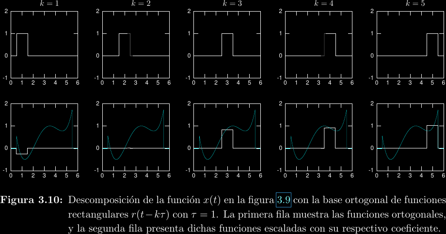
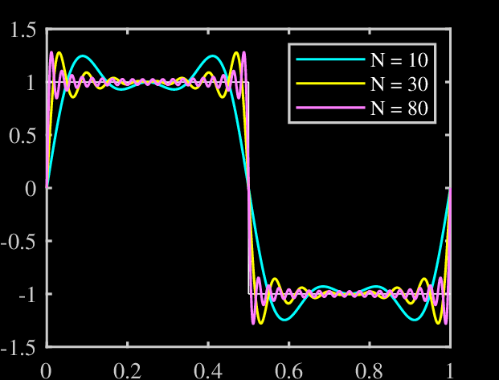
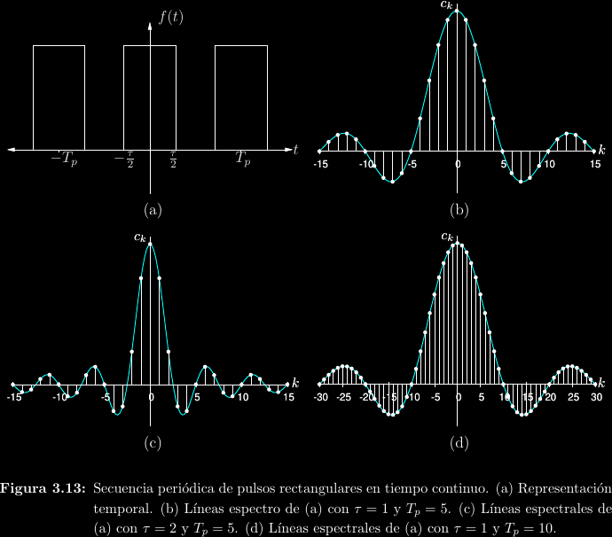
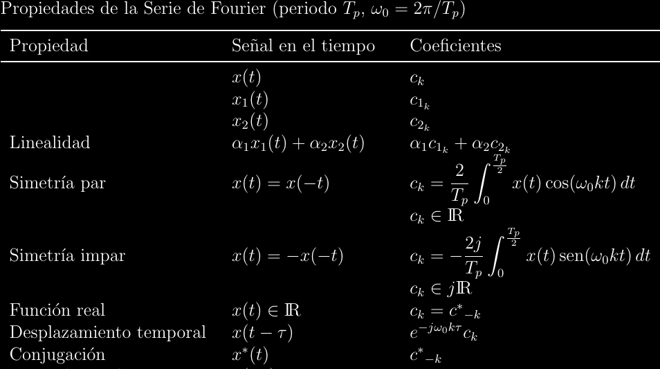
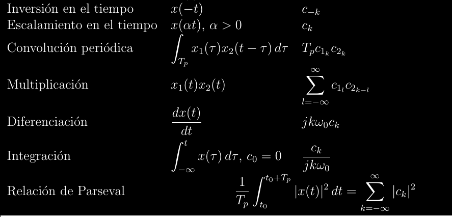

Series de Fourier
La síntesis de una función \(f(x)\) como la combinación lineal de una base funcional ortonormal \(\{u_k(x)\}; k\in\mathbb Z\) con un vector funcional generador \(c_k\) se da de manera natural por: \[f(x) = \sum_{k = -\infty}^{\infty}{c_k u_k(x)}\]
A la anterior se le conoce como serie de Fourier generalizada, su nombre viene de que sirve para cualquier base funcional ortogonal. Dada una escogencia de \(u_k(x)\), es necesario descomponer a la función \(f(x)\) en cada una de sus dimensiones desde la perspectiva de la base \({ u_k(x) }\).
Considérese un caso simplifcado con tal de encontrar \(c_k\). Sea el vector euclídeo \((3, 5)\) junto a la base ortogonal \({(2, 0), (0, 6)}\). Intuitivamente, podemos decir que hay "\(\frac{3}{2}\) de 2" en la primera coordenada de base: \(3\). También puede decirse que hay "\(\frac{5}{6}\) de \(6\)" en la coordenada de valor \(6\) de la base. Sin pembargo, al calcular el producto punto del vector deseado con cada vector de la base se obtiene: \[\begin{align*}(3, 5)\cdot(2, 0) &= 3\cdot 2 = 6\\(3, 5)\cdot(0, 6) &= 5\cdot 6 = 30\\\end{align*}\]
Si la operación terminara aquí, esto querría decir que \(c = (5, 30)\), pero eso no puede estar bien, ya que se obtendría un valor distinto al sintetizar. Nótese que el "problema" es que el producto punto multiplica por cada dimensión de cada vector de la base, en vez de dividir. Podemos arreglar esto al dividir por el cuadrado de las magnitudes de los vectores de la base: \[\begin{align*}\frac{3\cdot 2}{2^2} = \frac{3}{2}\\\frac{5\cdot 6}{6^2} = \frac{5}{6}\\\end{align*}\]
Estos valores sí representan apropiadamente la descomposición del vector original en sus constituyentes respecto a la base, tal que \(c = \left(\frac{3}{2}, \frac{5}{6}\right)\). Esta operación de encontrar los coeficientes \(c_k\) se conoce como análisis, en algún sentido el opuesto de síntesis. Así, análisis de Fourier es cualquier análisis realizado dentro de un espacio funcional. El análisis de Fourier para series generales viene dado por: \[c_k = \frac{\langle u_k(x), f(x)\rangle}{\|u_k(x)\|^2}\]
Nótese que esto es solo una generalización algebraica del argumento anterior para vectores euclídeos. El numerador de esta fracción dice "cuánto" de \(u_k(x)\) hay en \(f(x)\), mientras que el denominador normaliza el elemento de la base (la base debe ser ortogonal, pero puede no ser ortonormal).

Serie exponencial compleja
La variable independiente se tomará ahora como \(t\) en vez de \(x\), ya que típicamente representa tiempo real. Si la función \(f(t)\) es periódica con frecuencia fundamental \(\omega_0 = \frac{2\pi}{T}\), entonces se puede sintetizar a \(f(t)\) como: \[f(t) = \sum_{k = -\infty}^{\infty}{c_k e^{j\omega_0 kt}}\]
Y su análisis, para cualquier \(t_0\) en el dominio, es: \[c_k = \frac{1}{T}\int_{t_0}^{t_0 + T}{e^{-j\omega_0 kt}f(t)\mathrm{d}t}\]
La familia de funciones \(\{ e^{j\omega_0 kt}; k \in \mathbb{Z} \}\) es ortogonal y armónicamente relacionada.
Series trigonométricas
Mucha de la matemática que hemos cubierto no había sido desarrollada cuando Joseph Fourier describió originalmente su teoría. Su formulación original de la síntesis de funciones fue en términos de senos y cosenos, a lo que se le denomina serie trigonométrica: \[ \begin{align*} f(t) &= \frac{1}{2}a_0 + \sum_{k = 1}^{\infty}{a_k\cos(\omega_0kt)} + \sum_{k = 1}^{\infty}{b_k\sin(\omega_0kt)} \\ c_k &= \frac{a_k - jb_k}{2} \\ a_k &= 2\mathrm{Re}\{c_k\} = 2|c_k|\cos(\theta_k) = \frac{2}{T}\int_{t_0}^{t_0 + T}{f(t)\cos(\omega_0kt)\mathrm{d}t} \\ b_k &= -2\mathrm{Im}\{c_k\} = -2|c_k|\sin(\theta_k) = \frac{2}{T}\int_{t_0}^{t_0 + T}{f(t)\sin(\omega_0kt)\mathrm{d}t} \end{align*} \]
Esta expresión nos acerca más al significado fundamental de las series de Fourier, ya que observamos que la función original es una suma de senos y cosenos que coinciden de la manera correcta para constituir a la función. Es posible reducir los senos a cosenos desfasados, con lo cual se obtiene una sola suma en forma de la serie de cosenoidales desfasadas: \[ \begin{align*} f(t) &= c_0 + \sum_{k = 1}^{\infty}{\widetilde{c}_k\cos(\omega_0kt + \theta_k)} \\ \widetilde{c}_k &= 2|c_k| \\ \theta_k &= \angle c_k \end{align*} \]
Con esto llegamos al hecho más importante acerca de las series de Fourier: cada armónico, con su respectiva frecuencia que es múltiplo de la frecuencia fundamental, está asociado a una amplitud y un desfase, la síntesis no es más que la combinación lineal de las sinusoides respectivas. Posteriormente, extenderemos esta idea a señales no periódicas con la transformada de Fourier.

Al "rebote" alrededor de discontinuidades, como se observa en la imagen anterior, se le conoce como fenómeno de Gibbs y es uno de los requerimientos del análisis de Fourier: solo funciona bien en vecindades continuas. Luego se cubrirán herramientas que permiten estudiar sistemas no continuos.
Los coeficientes \(c_k\) tienen un significado importante que se estudiará más adelante. A su graficación se denomina espectro de \(f(t)\).

Propiedades del análisis
-
El análisis es lineal.
-
Los coeficientes del análisis de una función par tienen parte imaginaria nula. \(f(t) = \cos(t)\) es un ejemplo de una función par.
-
Los coeficientes del análisis de una función impar tienen parte real nula. \(f(t) = \sin(t)\) es un ejemplo de una función impar.
-
Por corolario de lo anterior, toda función puede separarse en componentes simétricas, una par y otra impar, tal como realizamos antes con \(e^z\) para obtener las funciones trigonométricas hiperbólicas. \[ \begin{align*} f(t) &= f_e(t) + f_o(t) \\ f_e(t) &= \frac{f(t) + f(-t)}{2} = f_e(-t) \\ f_o(t) &= \frac{f(t) - f(-t)}{2} = -f_o(-t) \end{align*} \] Puede verificarse que \(\cos_o(t) = 0\) y \(\sin_e(t) = 0\).
-
Si \(f(t)\) es real, entonces \(c_k\) es una función hermítica: \(c^*_{-k} = -c_k\).
-
Un desplazamiento temporal de \(\tau\) provoca un factor de \(e^{-j\omega_0 k\tau}\).
-
La diferenciación provoca un factor de \(jk\omega_0\).
 